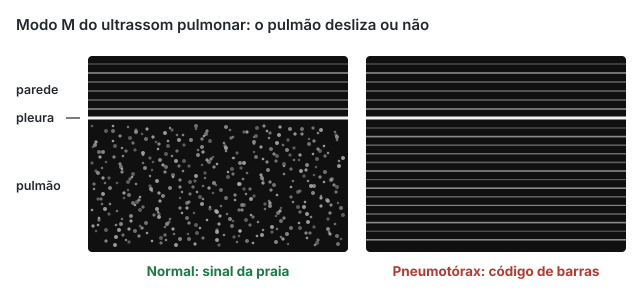

Emergências · 74 min · ATLS 11ª edição, 2025 · monografia
Abordagem inicial ao politraumatizado
Politraumatizado pelo ATLS 11ª edição (2025), do ponto de vista do emergencista: pré-hospitalar, xABCDE com torniquete, via aérea, descompressão torácica, choque hemorrágico, tranexâmico, transfusão maciça e REBOA, traumatismo craniano, FAST, eFAST e tomografia, NEXUS e regra canadense, lesões que não podem passar, síndrome compartimental, queimados, gestante e idoso anticoagulado, com a diretriz europeia de sangramento no trauma de 2023.
O que mudou na 11ª edição
A 11ª edição do ATLS (American College of Surgeons, 2025) mantém a espinha do curso, avaliação primária com reanimação simultânea, depois secundária, depois cuidado definitivo, e muda pontos que a prova já cobra:
- xABCDE. O "x", hemorragia externa exsanguinante, vem antes da via aérea e ganhou capítulo próprio; um estudo pré-hospitalar associou o xABCDE a sobrevida maior. É uma olhada de segundos, feita enquanto outro membro da equipe já abre a via aérea.
- Reanimar antes de intubar o paciente hipotenso e hipoxêmico.
- Sangue, não cristaloide: hemocomponentes ou sangue total; cristaloide só como ponte, 250 a 500 mL no adulto.
- Gravidade da hemorragia sem porcentagem de volume perdido: o que decide é se o sangramento continua.
- Cabeça e coluna juntas no D, com metas numéricas; tranexâmico em 1 g + 1 g ou 2 g em dose única, sempre até 3 horas.
Preparação e atendimento pré-hospitalar
A diretriz europeia recomenda levar o traumatizado grave direto ao serviço capaz de tratá-lo e reduzir ao mínimo o tempo até o controle do sangramento (ambas 1B). No Brasil isso passa pela regulação do SAMU; o hospital sem cirurgião, banco de sangue ou tomografia estabiliza e transfere, e a transferência não espera exame. A triagem de campo adotada pelo ATLS 11 (diretriz norte-americana de 2021) define trauma grave:
No hospital: reunião da equipe antes da chegada (funções, material de via aérea difícil e cirúrgica, sangue O, cristaloide aquecido, proteção individual); passagem MIST na chegada (mecanismo, lesões, sinais com Glasgow, tratamento e tendência), em silêncio; e S-xABCDE-BAR na saída. Um líder que não intuba nem drena sustenta a consciência situacional.
A lógica do xABCDE
A primária trata, na ordem em que matam, sangramento externo catastrófico, obstrução de via aérea, falência ventilatória, choque, lesão intracraniana expansiva e hipotermia. A equipe trabalha em paralelo, mas o líder raciocina em sequência e volta ao x e ao A diante de qualquer piora. Adjunto da primária é tudo o que ajuda a tratar uma ameaça imediata: monitor, oximetria, capnografia, gasometria com lactato, radiografia de tórax e de pelve, FAST e eFAST, sondas quando não contraindicadas, cinta pélvica e tala de fêmur.
flowchart TD
X{"x: sangramento
externo maciço?"} -->|"sim"| X1["Compressão, tamponamento
torniquete"]
X -->|"não"| AA{"A: via aérea pérvia
e protegida?"}
X1 --> AA
AA -->|"não"| A1["Aspirar, tração da mandíbula
via aérea definitiva
coluna protegida"]
AA -->|"sim"| B{"B: hipertensivo, aberto
ou hemotórax maciço?"}
A1 --> B
B -->|"sim"| B2["Descomprimir, curativo
drenar"]
B -->|"não"| C["C: sangue, tranexâmico
FAST, RX tórax e pelve"]
B2 --> C
C --> DE["D: Glasgow, pupilas
E: despir e aquecer"]
DE --> R{"Ameaças
controladas?"}
R -->|"não, piorou"| X
R -->|"sim"| S["Secundária
ou transferência"]
x: hemorragia exsanguinante
Procura-se, em segundos, sangramento externo ativo e volumoso: jato arterial, poça sob a maca, roupa encharcada; o couro cabeludo é o sítio esquecido. A resposta é em camadas: expor, compressão direta com gaze exatamente sobre o ponto que sangra, tamponamento das feridas fundas com gaze sob pressão e, na extremidade que não para, torniquete. Pinçamento às cegas na ferida não se faz.
- Indicação: sangramento de membro que não cede à pressão e ao tamponamento, jato arterial, amputação completa ou quase completa.
- Posição: 5 a 8 cm acima do sangramento, sobre a pele e não sobre a roupa, nunca sobre articulação.
- Aperto: até parar o sangramento e sumir o pulso distal; dói, e a resposta é analgesia, não afrouxar.
- Se ainda sangra: segundo torniquete logo acima do primeiro.
- Anotar o horário, de preferência no próprio dispositivo.
Até 2 horas, torniquete não aumentou amputação nem complicações. A conversão (troca deliberada por curativo compressivo) é feita na avaliação secundária, com sinais vitais normais (paciente em choque não é candidato), material de tamponamento e um torniquete novo à mão, afrouxando o molinete sem retirar o dispositivo. Depois de 2 horas vigiam-se distúrbios metabólicos, arritmia e lesão renal de reperfusão; com mais de 6 horas o risco de síndrome de reperfusão e de perda do membro é alto, e o momento da soltura é decidido com o cirurgião.
Pescoço, faringe e boca: pressão direta e tamponamento até cirurgia ou angiografia. Hemorragia juncional (virilha, axila) e de cavidade é não compressível: torniquete juncional tem dados insuficientes fora do combate, e o balão aórtico está fora do escopo do ATLS. Na virilha e na axila, pressão direta firme e controle cirúrgico precoce.
A: via aérea e coluna cervical
Voz clara indica via aérea pérvia no momento; queimadura de via aérea, hematoma cervical e trauma de face pioram em minutos. Sinais de risco: estridor, rouquidão, gorgolejo, sangue na boca, fratura de mandíbula ou face média, agitação (hipóxia até prova em contrário) e rebaixamento. A conduta escalona: aspiração e tração da mandíbula sem estender o pescoço, cânula orofaríngea, supraglótico como ponte e via aérea definitiva (tubo com balonete insuflado abaixo das cordas vocais).
Indicações de via aérea definitiva: via não mantida, Glasgow de 8 ou menos, hipoxemia ou hipoventilação que não cedem, obstrução previsível (inalação, hematoma em expansão), lesão medular acima de C5 com insuficiência respiratória. A diretriz europeia recomenda intubar sem demora na obstrução, no Glasgow de 8 ou menos, na hipoventilação e na hipoxemia (1B), evitar hipoxemia (1A) e manter normoventilação (1B); sugere evitar hiperóxia, exceto diante de exsanguinação iminente (2B).
Mantém-se restrição manual em linha da coluna, com a parte anterior do colar aberta; videolaringoscópio e bougie ajudam. A confirmação é o CO₂ expirado sustentado por pelo menos sete ventilações. "Não intubo e não oxigeno" leva à cricotireoidostomia cirúrgica (bisturi, bougie, tubo 6,0), sem hesitação.
A prancha longa é de transporte e causa lesão por pressão: sai cedo. No trauma penetrante o colar não é de rotina, só se o exame sugere lesão medular.
B: respiração e ventilação
Todo traumatizado recebe oxigênio; expor, inspecionar, palpar, percutir e auscultar, com oximetria e capnografia (CO₂ expirado baixo pode ser o primeiro sinal de débito baixo). Pneumotórax simples vira hipertensivo depois da intubação.
| Lesão | Traqueia e jugular | Ausculta e percussão | Conduta imediata |
|---|---|---|---|
| Pneumotórax hipertensivo | Traqueia desviada para o lado oposto; jugular distendida (pode faltar se há hipovolemia) | Murmúrio abolido, hipertimpanismo | Descompressão clínica, sem imagem, e dreno |
| Pneumotórax aberto | Central | Ferida soprante | Curativo oclusivo fixo em três lados ou selo com válvula; dreno por outra incisão |
| Hemotórax maciço | Central; jugular plana | Murmúrio reduzido, macicez | Dreno calibroso, sangue, cirurgia conforme fisiologia |
| Tórax instável e contusão | Central | Segmento paradoxal, crepitação | Analgesia potente, oxigênio, ventilação se preciso, sem excesso de volume |
A descompressão do pneumotórax hipertensivo tem dois pontos de consenso no ATLS 11: o quinto espaço intercostal, na altura da prega inframamária, entre as linhas axilares anterior e média (o mesmo sítio do dreno), e o segundo espaço intercostal na linha hemiclavicular. Cateter de 14 G ou mais; parede grossa e dobra do cateter fazem a agulha falhar, e a toracostomia digital (incisão no quinto espaço, dedo na pleura) é alternativa. Ambas são ponte para o dreno. Na gestante no fim da gravidez o dreno sobe para o segundo ou terceiro espaço, porque o diafragma sobe até 4 cm.
Hemotórax acima de cerca de 300 mL é drenado para não virar coágulo retido. Dreno de 14 Fr basta no pneumotórax e no hemotórax comum; o maciço pede 24 Fr ou mais. O ATLS 11 é explícito em que a indicação de toracotomia se baseia na fisiologia (choque, sangramento que continua), e não num débito isolado do dreno. Pneumotórax assintomático visto só na tomografia, com menos de 3,5 cm, pode ser observado; transporte aéreo e ventilação mecânica pesam a favor de drenar.

C: circulação e choque hemorrágico
Choque no traumatizado é hemorrágico até prova em contrário; o obstrutivo se trata junto, e neurogênico ou cardiogênico só se aceitam depois de afastada a hemorragia. Pele fria com taquicardia é choque; a sistólica pode se manter até perdas de cerca de 30% da volemia. O índice de choque (frequência dividida pela sistólica) antecipa: normal até 0,7; 0,8 ou mais associa-se a transfusão e cirurgia de emergência; 1 ou mais, a mortalidade maior.
| Parâmetro | 1 (menor) | 2 | 3 | 4 (maior) |
|---|---|---|---|---|
| Frequência cardíaca | Inalterada | Inalterada a aumentada | Acima de 100 | Acima de 120 |
| Sistólica | Inalterada | Inalterada | Inalterada a reduzida | Muito reduzida, abaixo de 90 |
| Pressão de pulso | Inalterada | Reduzida | Reduzida | Reduzida |
| Consciência | Inalterada | Inalterada | Reduzida | Muito reduzida |
| Déficit de base (mEq/L) | 0 a −2 | −2 a −6 | −6 a −10 | −10 ou pior |
| Hemocomponentes | Improvável | Possível | Provável | Protocolo de transfusão maciça |
| Resposta à reanimação | Rápida e sustentada | Sustentada | Transitória | Mínima ou nenhuma |
Tabela do ATLS 11, faixas numeradas aqui da menor para a maior gravidade. As edições anteriores davam a cada uma a porcentagem de perda das classes I a IV (até 15%, 15 a 30%, 31 a 40%, acima de 40%), que ainda cai em prova; a hipotensão aparece na classe III.
O sangue se esconde em quatro lugares mais o chão: tórax, peritônio, pelve e retroperitônio, ossos longos com partes moles, e a hemorragia externa. Radiografia de tórax, de pelve e FAST procuram três deles em minutos. Pelve instável com choque recebe cinta pélvica ou lençol centrado nos trocânteres maiores ainda na primária.
Dois cateteres periféricos curtos de 16 G ou mais (o fluxo cresce com a quarta potência do raio), intraósseo se a veia demora. Hemácias e plasma, ou sangue total, são o fluido de reanimação; até chegarem, 250 a 500 mL de cristaloide aquecido a 39 °C. No sangramento ativo, hemácias O e plasma AB sem prova cruzada, Rh negativo para mulheres em idade fértil.
A resposta classifica: respondedor sustentado, transitório (continua sangrando: sangue, cirurgião, transferência) e não respondedor, que vai a controle cirúrgico ou angioembolização imediatos depois de afastadas causas obstrutivas. Vasopressor não trata choque hemorrágico: piora a perfusão; serve de ponte na indução e no choque neurogênico.
O tamponamento pode vir sem a tríade de Beck; FAST ou eco diagnosticam, o tratamento é cirúrgico e a pericardiocentese guiada é temporária. Na parada ou hipotensão profunda por ferimento cardíaco, com equipe treinada e parada de até 15 minutos, cabe a toracotomia de reanimação na sala de emergência.
flowchart TD A["Choque: pele fria, taquicardia
índice de choque ≥ 0,8"] --> B["Sangramento externo contido
obstrutivo afastado"] B --> C["Sangue O, plasma AB
tranexâmico até 3 h
cálcio, aquecer"] C --> D{"Resposta à
reanimação?"} D -->|"sustentada"| T["Tomografia
de corpo inteiro"] D -->|"transitória
ou nenhuma"| F{"RX tórax, RX pelve
e FAST"} F -->|"hemotórax"| E["Dreno e cirurgia
pela fisiologia"] F -->|"FAST positivo"| G["Centro cirúrgico"] F -->|"pelve aberta"| H["Cinta pélvica
angio ou packing"]
Transfusão maciça, tranexâmico e coagulopatia
A coagulopatia do trauma começa antes do primeiro soro, por hipoperfusão e hiperfibrinólise, e piora com diluição, hipotermia e acidose: a tríade letal. A reanimação de controle de dano ataca tudo junto. Crioprecipitado, fibrinogênio e viscoelástico estão em transfusão e hemoterapia.
Proporção. O ATLS pratica meta de 1:1:1 (hemácias, plasma e plaquetas) ou sangue total. No PROPPR, 1:1:1 e 1:1:2 não diferiram em mortalidade, mas o 1:1:1 teve menos morte por exsanguinação. A diretriz europeia aceita duas estratégias iniciais: fibrinogênio (concentrado ou crioprecipitado) com hemácias, ou plasma com razão plasma:hemácias de pelo menos 1:2 (ambas 1C), e sugere razão alta de plaquetas (2B).
Tranexâmico. O CRASH-2 (20.211 adultos, até 8 horas do trauma, 1 g em 10 minutos e 1 g em 8 horas contra placebo) reduziu a mortalidade. Pelo tempo: dado em até 1 hora, reduziu a morte por sangramento (5,3% contra 7,7%; risco relativo 0,68); entre 1 e 3 horas, ainda reduziu (4,8% contra 6,1%; 0,79); depois de 3 horas pareceu aumentar (4,4% contra 3,1%; 1,44). A janela é de 3 horas contadas do trauma. O ATLS 11 aceita também 2 g em dose única e não recomenda passar de 3 horas salvo hiperfibrinólise. No traumatismo craniano, o CRASH-3 (12.737 pacientes) não reduziu a morte relacionada à lesão no conjunto (risco relativo 0,94), mas reduziu no leve a moderado (0,78).
Cálcio. O citrato quela o cálcio, e a hipocalcemia dá hipotensão refratária e coagulopatia: medir o ionizado cedo e repetidamente e corrigir com cloreto de cálcio (1C).
Controle de dano. Choque com sangramento contínuo, coagulopatia, hipotermia ou acidose indicam cirurgia abreviada: conter sangramento e contaminação, corrigir a fisiologia na terapia intensiva, reparo definitivo depois (1B). Na pelve em choque, fechamento e estabilização do anel o mais cedo possível (1B), angioembolização, e tamponamento pré-peritoneal quando a angiografia não está disponível a tempo (1C).
Diretriz europeia de sangramento no trauma
A 6ª edição da diretriz europeia de sangramento maior e coagulopatia após trauma (Rossaint e colaboradores, Critical Care, 2023) tem 39 recomendações. As mais úteis ao emergencista, transcritas da fonte:
| Recomendação | Grau |
|---|---|
| Usar índice de choque e/ou pressão de pulso para estimar o grau do choque e a necessidade de transfusão | 1C |
| Fonte óbvia de sangramento, ou choque hemorrágico extremo com fonte suspeita: procedimento imediato de controle | 1B |
| Lactato para estimar e acompanhar sangramento e hipoperfusão; déficit de base como alternativa | 1B |
| Se a reposição restritiva não atinge a pressão-alvo, noradrenalina junto com fluido | 1C |
| Cristaloide (salina 0,9% ou balanceado) no hipotenso que sangra; evitar solução hipotônica como Ringer lactato no traumatismo craniano grave | 1B |
| Se transfundir hemácias, alvo de hemoglobina de 7 a 9 g/dL | 1C |
| Cinta pélvica pré-hospitalar na suspeita de fratura de pelve | 1C |
| Tranexâmico o quanto antes, se possível a caminho, e em até 3 h: 1 g em 10 min e 1 g em 8 h, sem esperar o viscoelástico (este último, 1B) | 1A |
| Fibrinogênio (concentrado ou crioprecipitado) se sangramento maior com fibrinogênio de Clauss ≤ 1,5 g/L ou déficit funcional no viscoelástico | 1C |
| Plaquetas acima de 50.000/µL no sangramento ativo e acima de 100.000/µL no traumatismo craniano | 2C |
| Fator VIIa recombinante como primeira linha | 1, contraB |
| Tromboprofilaxia farmacológica com compressão pneumática em até 24 h após o controle do sangramento | 1B |
Sobre sangue no pré-hospitalar não há recomendação: PAMPer e COMBAT, os ensaios de plasma, foram conflitantes.
D: traumatismo craniano e medula
Glasgow por componente (o motor prediz melhor), pupilas, déficit focal e sinais de lesão medular (nível sensitivo, priapismo). Rebaixamento é traumático até prova em contrário, mesmo com hálito etílico. O que se trata é a lesão secundária: um único episódio de hipóxia aumenta a mortalidade, e hipóxia com hipotensão a dobra. Escala, GCS-P e herniação estão detalhados em coma e hipertensão intracraniana.
| Alvo no traumatismo craniano (ATLS 11) | Valor |
|---|---|
| Sistólica (15 anos ou mais) / pressão média | ≥ 100 mmHg / > 80 mmHg |
| SpO₂ / PaO₂ | ≥ 94% / 80 a 100 mmHg |
| PaCO₂ (CO₂ expirado 35 a 40) | 35 a 45 mmHg |
| Temperatura / glicose | 36 a 38 °C / 100 a 180 mg/dL |
| Hemoglobina / plaquetas / INR | > 7 g/dL / ≥ 75.000 / ≤ 1,4 |
| Sódio / osmolalidade | 135 a 145 mEq/L / ≤ 320 mOsm |
| Perfusão cerebral / pressão intracraniana | 60 a 70 mmHg / < 22 mmHg |
A Brain Trauma Foundation estratifica a sistólica por idade (110 mmHg ou mais dos 15 aos 49 e acima de 70 anos; 100 dos 50 aos 69), e é por isso que a hipotensão permissiva não vale para o traumatismo craniano. Diante de piora (queda de 2 pontos, anisocoria nova, Cushing): intubar e ventilar, cabeceira a 30 a 45° com pescoço neutro, afrouxar colar e fixação que comprimem as jugulares, sedação e analgesia, bólus hiperosmolar (salina 5% 250 mL ou manitol 20% 250 mL; manitol 1 g/kg em 5 a 15 minutos agrava hipotensão pela diurese), hiperventilação transitória para PaCO₂ de 30 a 35 mmHg só como ponte e neurocirurgia. Sódio acima de 160 ou osmolalidade acima de 320 tornam improvável o efeito de mais hiperosmolar. Profilaxia anticonvulsivante não é recomendada com Glasgow 14 ou 15, na hemorragia subaracnóidea ou intraventricular traumática isolada nem no subdural isolado com Glasgow de 13 ou mais; quando indicada, levetiracetam ou fenitoína por até 7 dias (o valproato aumentou a morte). Corticoide não tem lugar.
Na lesão medular, o choque neurogênico (acima de T6: hipotensão, bradicardia, pele quente) só é aceito depois de excluída hemorragia, que coexiste com frequência. Volume, noradrenalina se não basta, e pressão média de 85 a 90 mmHg por sete dias na lesão medular isolada.
E: exposição e hipotermia
Despir tudo, rolar em bloco para ver dorso, períneo, axilas e couro cabeludo, e logo cobrir e aquecer: manta, ar forçado, sala aquecida, fluidos a 39 °C. A hipotermia do traumatizado costuma ser adquirida na cena e na sala, e agrava choque e coagulopatia.
| Estágio | Temperatura central | Clínica | Conduta |
|---|---|---|---|
| I | 32 a 35 °C | Consciente, tremendo | Ambiente e roupas quentes, fluidos orais quentes |
| II | 28 a < 32 °C | Consciência reduzida, sem tremor | Monitor, mobilização cuidadosa (arritmia), reaquecimento ativo externo e fluidos aquecidos |
| III | 24 a < 28 °C | Inconsciente, com sinais vitais | Acrescentar intubação e suporte extracorpóreo, se disponível |
| IV | < 24 °C | Sem sinais vitais | RCP, até três doses de adrenalina e desfibrilação; reaquecimento interno ativo |
FAST, eFAST e imagem
O FAST examina quatro janelas: pericárdio (subxifoide), hepatorrenal, esplenorrenal e pelve. O eFAST acrescenta as janelas torácicas: deslizamento pleural anterior para pneumotórax e recessos costofrênicos para hemotórax. Rápido, repetível e sem radiação, depende de quem opera e não vê retroperitônio, víscera oca, pâncreas nem diafragma; FAST negativo não exclui lesão, e repetir faz parte do exame. A diretriz europeia recomenda ultrassom à beira do leito, incluindo o FAST, no trauma toracoabdominal (1C).

A radiografia de pelve pode ser omitida no contuso acordado sem dor pélvica. A tomografia é para quem está estável ou estabilizado e não pode atrasar cirurgia nem transferência. Glasgow de 12 ou menos e mecanismo de alta energia (explosão, colisão em alta velocidade, queda de grande altura) pedem tomografia multidetectora de corpo inteiro, que a diretriz europeia recomenda precoce e com contraste (1B). No REACT-2 (1.083 analisados), a tomografia de corpo inteiro imediata não reduziu a mortalidade hospitalar em relação à investigação convencional com tomografia seletiva (16% nos dois braços): ganha em rapidez e lesão oculta, não em sobrevida provada.
Para a coluna cervical, as regras clínicas dispensam imagem em adulto alerta e estável:
Comparadas em 8.283 pacientes (NEJM, 2003), a regra canadense teve sensibilidade de 99,4% contra 90,7% da NEXUS. Nenhuma vale para criança, e o ATLS 11 lembra o desempenho ruim no idoso. Com tomografia negativa e exame confiável, o colar sai pelo mesmo exame clínico.
Avaliação secundária
Começa com a primária concluída e o paciente respondendo; se piora, volta-se ao x. História pelo AMPLE (alergias, medicamentos, com atenção a anticoagulante e betabloqueador, passado médico e gestação, última refeição, eventos e ambiente do trauma) e exame da cabeça aos pés, com olhos antes do edema, dorso com rolamento e exame neurológico completo; é aqui que se converte o torniquete. Sangue no meato uretral ou hematoma perineal proíbem a sonda vesical antes da uretrografia; suspeita de fratura da lâmina cribriforme troca a sonda nasogástrica pela orogástrica. Profilaxia antitetânica pelo estado vacinal e tipo de ferida; analgesia não mascara o exame e não deve ser negada. Quem excede o recurso do serviço é transferido sem completar a investigação.
Lesões que não podem passar
São as que matam em horas e têm apresentação discreta na chegada:
- Lesão contundente de aorta, na desaceleração, em mais de 60% no istmo (ligamento arterioso); sem tratamento, 20% dos que chegam vivos morrem em 30 horas. Radiografia: mediastino acima de 8 cm deitado (6 cm em pé), botão aórtico apagado, capuz apical e hemotórax à esquerda, traqueia e sonda gástrica desviadas para a direita. Radiografia normal não exclui; angiotomografia confirma. Enquanto se decide o reparo, sistólica abaixo de 100 mmHg e frequência abaixo de 100 com betabloqueador de ação curta, como o esmolol.
- Contusão cardíaca: taquicardia inexplicada, fibrilação atrial, extrassístoles ou alteração de ST. Eletrocardiograma e troponina normais permitem alta; alterados, monitor por 24 a 48 horas.
- Lesão de diafragma, sobretudo à esquerda: a radiografia pode mostrar só cúpula elevada, e a tomografia erra até um quinto.
- Víscera oca, pâncreas e duodeno: FAST não vê, tomografia inicial pode ser pouco expressiva. Sinal do cinto, fratura de Chance e dor que cresce pedem reexame seriado.
- Lesão vascular de membro: índice tornozelo-braquial abaixo de 0,9 é suspeito.
Laparotomia no contuso: hipotensão com FAST positivo ou sem outra fonte, peritonite, evisceração, ar livre ou ruptura de diafragma, tomografia com lesão de víscera oca ou parenquimatosa grave. No politraumatizado grave, lesão despercebida na primeira avaliação é comum; reexame completo e seriado nas primeiras 24 horas é o que as encontra.
Síndrome compartimental e rabdomiólise
Pressão crescente num compartimento inextensível até cessar a perfusão: fratura de tíbia e antebraço, esmagamento, reperfusão, queimadura circunferencial, gesso apertado. O primeiro e mais confiável sinal é a dor desproporcional, que não cede com analgesia e piora ao estiramento passivo, com compartimento tenso e parestesia; pulso ausente é tardio e não precisa existir. O diagnóstico é clínico; no sedado, intubado ou com lesão neurológica mede-se a pressão: acima de 30 mmHg, ou diferença entre a diastólica e a pressão do compartimento abaixo de 30 mmHg, reforça a suspeita. Afrouxar tudo o que aperta e chamar o cirurgião para fasciotomia; bloqueio regional que mascare a dor deve ser evitado no membro em risco.
A síndrome de esmagamento é a rabdomiólise traumática: mioglobina, potássio e ácido saem do músculo liberado, com lesão renal, acidose, hipercalemia (arritmia na reperfusão), hipocalcemia e coagulopatia. Urina escura com fita positiva para heme e CK acima de 10.000 U/L marcam o quadro. A conduta é volume precoce, eletrocardiograma e potássio seriados, equilibrando a proteção renal contra o risco de reabrir o sangramento; bicarbonato não tem consenso na fase inicial.
Queimados
Parar a queimadura (roupa; químico com irrigação), depois xABCDE. A via aérea se perde pelo edema das primeiras 12 a 24 horas. Intubação imediata diante de rouquidão, estridor, tiragem, incapacidade de eliminar secreções, fadiga, hipoxemia e rebaixamento; considerar em queimadura muito extensa (40 a 50% ou mais), queimadura profunda de face e dentro da boca, fuligem na orofaringe com exposição em ambiente fechado. Oxímetro de pulso superestima a saturação na intoxicação por monóxido de carbono; carboxi-hemoglobina acima de 10% indica exposição importante. Cianeto se suspeita com hipotensão e acidose láctica profunda sem outra causa; tratamento presuntivo com hidroxocobalamina quando houve parada, perda de consciência, Glasgow abaixo de 10, lactato acima de 10 e carboxi-hemoglobina acima de 10%.
Extensão pela regra dos nove no adulto: cabeça 9%, cada membro superior 9%, tronco anterior 18%, posterior 18%, cada membro inferior 18%, períneo 1%; a palma com os dedos do próprio paciente vale cerca de 1%. Só entram segundo grau (espessura parcial) e terceiro grau (total); o eritema do primeiro grau fica fora. Na criança a cabeça pesa mais e os membros inferiores menos.
- Antes do cálculo, começar Ringer lactato aquecido a 500 mL/h a partir dos 13 anos (250 mL/h dos 6 aos 12; 125 mL/h até 5 anos).
- Adulto: 2 mL × peso × % queimada em 24 horas; metade nas primeiras 8 horas contadas da queimadura (vazão horária = total ÷ 16). Criança: 3 mL, com soro glicosado de manutenção nas pequenas.
- Alvo de diurese: 0,5 mL/kg/h (30 a 50 mL/h) no adulto, 1 mL/kg/h na criança; subir ou baixar a vazão 10 a 30% por hora conforme a diurese, sem bólus salvo hipotensão.
- Queimadura elétrica: 4 mL × peso × %; com urina pigmentada, alvo de 100 mL/h no adulto até clarear.
A Parkland clássica usa 4 mL/kg/%, com a mesma divisão; o ATLS parte de 2 mL e ajusta pela diurese, porque excesso de volume causa edema e síndrome compartimental. Queimadura circunferencial profunda que compromete perfusão ou ventilação pede escarotomia. Transferência a centro de queimados (American Burn Association): espessura total, parcial de 10% ou mais, face, mãos, pés, genitais, articulações, inalação, química e elétrica de alta tensão.
Trauma na gestante
Reanimar a mãe é tratar o feto: o choque materno é a principal causa de morte fetal. A volemia expandida esconde perdas de 1.200 a 1.500 mL, com o útero já hipoperfundido. A partir de cerca de 20 semanas (útero na altura do umbigo) a compressão da veia cava em decúbito reduz o débito em até 30%: deslocar o útero manualmente para a esquerda ou inclinar a prancha 15 a 30° para a esquerda. Acesso acima do diafragma, via aérea difícil com tubo 6 ou 7, e PaCO₂ de 30 mmHg é normal: 40 já é retenção. Vasopressor reduz o fluxo uterino e não é primeira linha. Transfusão maciça cedo, com O negativo; na falta, O positivo é preferível a reanimar mal.
Imagem pela indicação materna: abaixo de 50 mGy o risco fetal é pequeno ou nulo, e a tomografia de trauma fica abaixo disso. O descolamento de placenta, segunda causa de morte fetal no trauma, pode vir oculto: o ultrassom é pouco sensível e a cardiotocografia é o exame mais sensível disponível. Na gestação viável, monitorização fetal por 6 horas, estendida a 24 horas se houver mais de 6 contrações numa hora. Toda gestante Rh negativo recebe imunoglobulina anti-D (300 µg cobre até 30 mL de sangue fetal) em até 72 horas, mesmo com Kleihauer-Betke negativo. Na parada materna com útero na altura do umbigo ou acima e sem retorno da circulação após 5 minutos de reanimação adequada, o ATLS 11 recomenda considerar a cesárea de reanimação, qualquer que seja o estado fetal: esvaziar o útero ajuda a mãe.
Idoso e anticoagulado
Queda é a principal causa de lesão fatal no idoso e responde por metade dos traumatismos cranianos nessa faixa; a da própria altura basta. A reserva é pequena, o betabloqueador e o marca-passo tiram a taquicardia, e a pressão "normal" do hipertenso pode ser choque: acima de 65 anos o ATLS usa sistólica abaixo de 110 mmHg como hipotensão. Lactato de 2,4 ou mais, déficit de base e índice de choque de 0,7 ou mais ajudam a achar hipoperfusão oculta. Cada costela fraturada a mais aumenta a mortalidade, e a pneumonia chega a 30%: analgesia multimodal com bloqueio regional. Tomografia de crânio com limiar baixo; metas de cuidado discutidas cedo.
| Fármaco | Reversão no sangramento grave |
|---|---|
| Varfarina | Complexo protrombínico e vitamina K 5 a 10 mg IV (diretriz europeia, 1A); plasma só na falta do complexo |
| Dabigatrana | Idarucizumabe 5 g IV (diretriz europeia, 1C) |
| Rivaroxabana, apixabana | Andexanete alfa se sangramento com risco de vida, sobretudo intracraniano (2C); sem ele, ou com edoxabana, complexo protrombínico 25 a 50 U/kg (2C) |
| Heparina não fracionada | Protamina 1 mg para cada 100 U, máximo de 50 mg |
| Enoxaparina | Protamina 1 mg por mg nas primeiras 8 horas, 0,5 mg por mg depois; reversão parcial |
| Antiagregante | Não transfundir plaquetas de rotina (diretriz europeia, 1C); desmopressina 0,3 µg/kg ou plaquetas no sangramento crítico |
Plasma para varfarina exige 10 a 15 mL/kg, volume que o idoso cardiopata não tolera; os agentes de reversão têm risco trombótico e ficam para sangramento que ameaça a vida.
Erros frequentes
- Abrir a via aérea enquanto um membro sangra em jato: o x vem antes.
- Torniquete frouxo, sobre a roupa ou sobre a articulação, e sem horário anotado.
- Intubar o chocado sem reanimar antes e com dose cheia de indutor.
- Esperar radiografia para descomprimir o pneumotórax hipertensivo, ou confiar na agulha como tratamento definitivo.
- Tranexâmico depois de 3 horas do trauma, ou contar as 3 horas a partir da chegada.
- Hipotensão permissiva no traumatismo craniano ou na lesão medular.
- Levar o instável à tomografia; concluir "sem lesão" por um FAST negativo.
- Sonda vesical com sangue no meato; nasogástrica na fratura de base de crânio.
- Esperar perda de pulso para pensar em síndrome compartimental.
- Tomar a pressão de 115 do idoso betabloqueado como normal.